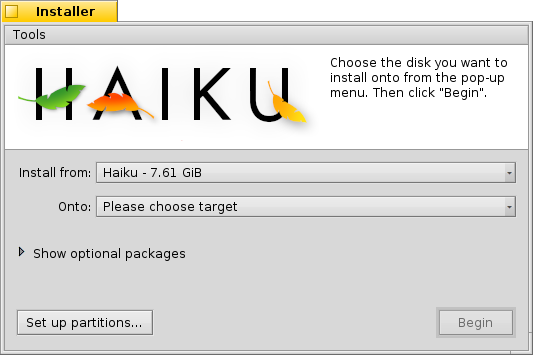

Instalador
| Deskbar: | ||
| Localização: | /boot/system/apps/Installer | |
| Definições: | nenhuma |
The Installer is used to copy Haiku onto another volume. You can use it to clone your currently running Haiku - with all installed software and all data and settings. And of course you use it for the initial installation after booting from install CD or USB drive, see the online Installation Guide.
Upon launch Installer displays a start window with important information. It's not a mindless EULA you're used to click away in the blink of an eye, it states:
This is beta-quality software. Make backups or suffer the consequences!
The Installer needs a prepared partition. You can use DriveSetup to create and format a partition, but cannot yet resize existing partitions. For that you'll have to use a GParted LiveCD or a similar tool for now.
- O Haiku pode ser adicionado manualmente ao gerenciador de inicialização GRUB. Como isso é feito exatamente está descrito no guia online.
Uma vez que tenha confirmado com , será apresentado à janela principal:

No primeiro menu pop-up escolha a fonte para a instalação. Pode ser um Haiku atualmente instalado ou pode vir de um CD de instalação, dispositivo USB, etc.
O segundo menu pop-up especifica o alvo para a instalação. Esta partição/volume alvo será completamente sobrescrito e deverá ser preparado previamente por uma ferramenta de particionamento como o GParted.
Clicando a pequena seta irá Exibir pacotes opcionais, se disponíveis, que pode-se escolher para instalar em adição ao Haiku básico.
Recomendamos fazer uma última verificação, se escolheu o alvo correto antes de iniciar o processo de instalação. Clique em para abrir a Configuração de Unidade e dar uma olhada na nomeação e disposição dos volumes e partições disponíveis.
starts the installation procedure, which basically copies the /home/ and /system/ folder onto the target volume and makes it bootable.
Ferramentas
No fim do procedimento de instalação, a partição torna-se automaticamente inicializável. Contudo, pode acontecer que outro sistema operacional ou ferramenta de particionamento (acidentalmente) sobrescreva o setor de inicialização do seu volume Haiku. Neste caso, inicialize seu CD de instalação e inicie o Instalador. Selecione sua partição de inicialização a partir do menu e selecione do menu para torná-lo inicializável novamente.
The next item in the menu is used to that puts a menu in the boot sector to choose what operating system to boot. See topic BootManager for more information.
You don't need to run the BootManager if you already use a bootmanager like GRUB, in which case you have to add Haiku manually (see above), or Haiku runs exclusively on your machine.
If you use UEFI to boot your system instead of going the BIOS/MBR route, you can use to copy the EFI loader from the boot/install medium to your prepared partition that you select from the submenu. That EFI system partition needs to be FAT32-formatted on a GPT-initialized disk with enough free space.